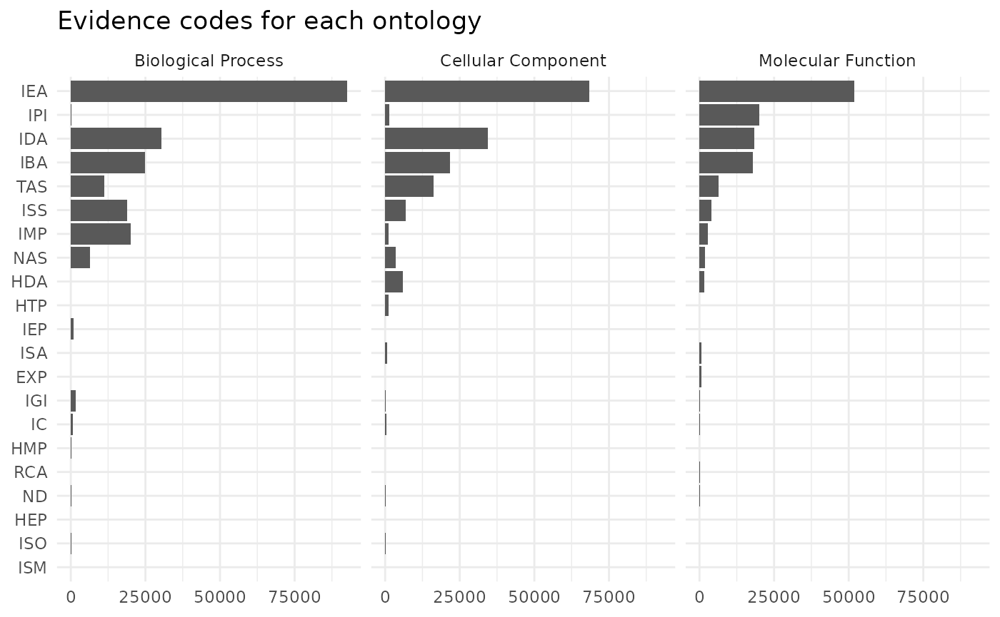
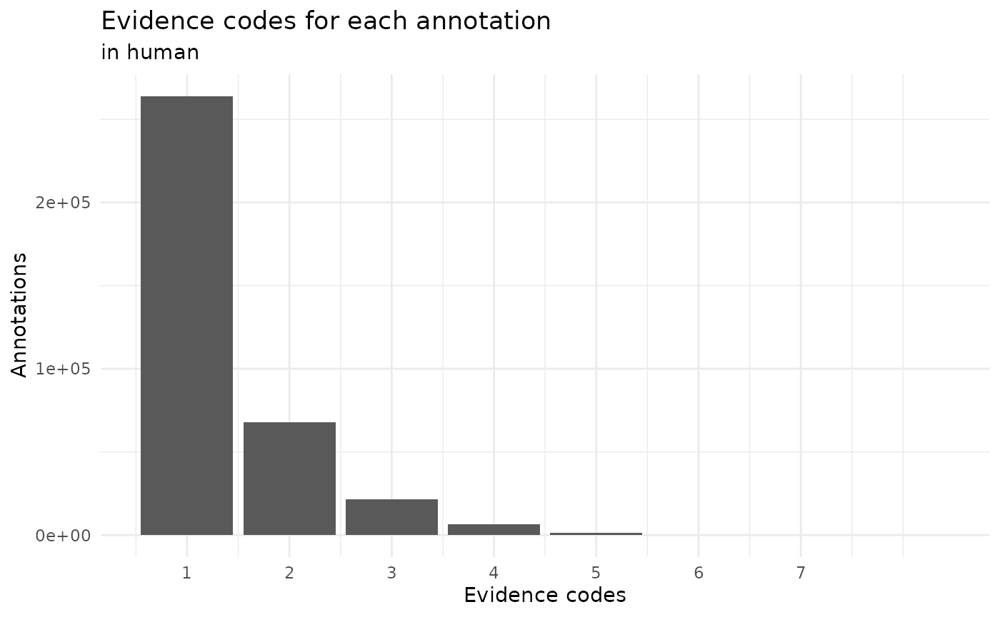
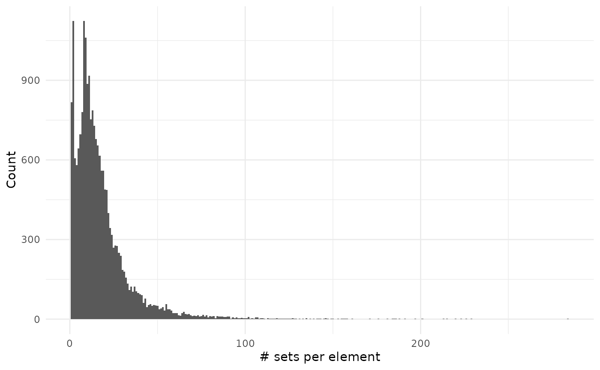
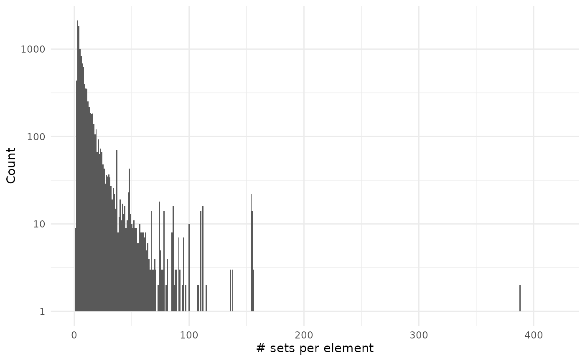
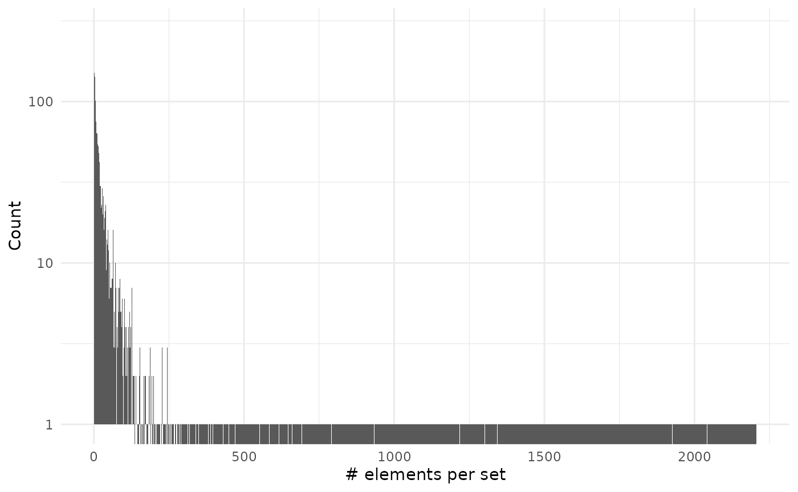

Advanced examples
Lluís Revilla
lluis.revilla@gmail.com2025 Feb 12
Source:vignettes/advanced.Rmd
advanced.RmdAbstract
This vignette assumes you are familiar with set operations from the basic vignette.
Initial setup
To show compatibility with tidy workflows we will use magrittr pipe operator and the dplyr verbs.
Human gene ontology
We will explore the genes with assigned gene ontology terms. These terms describe what is the process and role of the genes. The links are annotated with different evidence codes to indicate how such annotation is supported.
# We load some libraries
library("org.Hs.eg.db", quietly = TRUE)
library("GO.db", quietly = TRUE)
library("ggplot2", quietly = TRUE)
# Prepare the data
h2GO_TS <- tidySet(org.Hs.egGO)
h2GO <- as.data.frame(org.Hs.egGO)We can now explore if there are differences in evidence usage for each ontology in gene ontology:
library("forcats", include.only = "fct_reorder2", quietly = TRUE)
h2GO %>%
group_by(Evidence, Ontology) %>%
count(name = "Freq") %>%
ungroup() %>%
mutate(Evidence = fct_reorder2(Evidence, Ontology, -Freq),
Ontology = case_match(Ontology,
"CC" ~ "Cellular Component",
"MF" ~ "Molecular Function",
"BP" ~ "Biological Process",
.default = NA)) %>%
ggplot() +
geom_col(aes(Evidence, Freq)) +
facet_grid(~Ontology) +
theme_minimal() +
coord_flip() +
labs(x = element_blank(), y = element_blank(),
title = "Evidence codes for each ontology")
We can see that biological process are more likely to be defined by IMP evidence code that means inferred from mutant phenotype. While inferred from physical interaction (IPI) is almost exclusively used to assign molecular functions.
This graph doesn’t consider that some relationships are better annotated than other:
h2GO_TS %>%
relations() %>%
group_by(elements, sets) %>%
count(sort = TRUE, name = "Annotations") %>%
ungroup() %>%
count(Annotations, sort = TRUE) %>%
ggplot() +
geom_col(aes(Annotations, n)) +
theme_minimal() +
labs(x = "Evidence codes", y = "Annotations",
title = "Evidence codes for each annotation",
subtitle = "in human") +
scale_x_continuous(breaks = 1:7)
We can see that mostly all the annotations are done with a single evidence code. So far we have explored the code that it is related to a gene but how many genes don’t have any annotation?
# Add all the genes and GO terms
h2GO_TS <- add_elements(h2GO_TS, keys(org.Hs.eg.db)) %>%
add_sets(grep("^GO:", keys(GO.db), value = TRUE))
sizes_element <- element_size(h2GO_TS) %>%
arrange(desc(size))
sum(sizes_element$size == 0)
#> [1] 172480
sum(sizes_element$size != 0)
#> [1] 20825
sizes_set <- set_size(h2GO_TS) %>%
arrange(desc(size))
sum(sizes_set$size == 0)
#> [1] 22261
sum(sizes_set$size != 0)
#> [1] 18678So we can see that both there are more genes without annotation and more gene ontology terms without a (direct) gene annotated.
sizes_element %>%
filter(size != 0) %>%
ggplot() +
geom_histogram(aes(size), binwidth = 1) +
theme_minimal() +
labs(x = "# sets per element", y = "Count")
sizes_set %>%
filter(size != 0) %>%
ggplot() +
geom_histogram(aes(size), binwidth = 1) +
theme_minimal() +
labs(x = "# elements per set", y = "Count")
As you can see on the second plot we have very large values but that are on associated on many genes:
head(sizes_set, 10)
#> sets size probability Ontology
#> 1 GO:0005515 13668 1 MF
#> 2 GO:0005634 5736 1 CC
#> 3 GO:0005829 5468 1 CC
#> 4 GO:0005886 5286 1 CC
#> 5 GO:0005737 5253 1 CC
#> 6 GO:0005654 3933 1 CC
#> 7 GO:0016020 3272 1 CC
#> 8 GO:0046872 2400 1 MF
#> 9 GO:0070062 2213 1 CC
#> 10 GO:0005576 1995 1 CCUsing fuzzy values
This could radically change if we used fuzzy values. We could assign a fuzzy value to each evidence code given the lowest fuzzy value for the IEA (Inferred from Electronic Annotation) evidence. The highest values would be for evidence codes coming from experiments or alike.
nr <- h2GO_TS %>%
relations() %>%
dplyr::select(sets, Evidence) %>%
distinct() %>%
mutate(fuzzy = case_match(Evidence,
"EXP" ~ 0.9,
"IDA" ~ 0.8,
"IPI" ~ 0.8,
"IMP" ~ 0.75,
"IGI" ~ 0.7,
"IEP" ~ 0.65,
"HEP" ~ 0.6,
"HDA" ~ 0.6,
"HMP" ~ 0.5,
"IBA" ~ 0.45,
"ISS" ~ 0.4,
"ISO" ~ 0.32,
"ISA" ~ 0.32,
"ISM" ~ 0.3,
"RCA" ~ 0.2,
"TAS" ~ 0.15,
"NAS" ~ 0.1,
"IC" ~ 0.02,
"ND" ~ 0.02,
"IEA" ~ 0.01,
.default = 0.01)) %>%
dplyr::select(sets = "sets", elements = "Evidence", fuzzy = fuzzy)We have several evidence codes for the same ontology, this would result on different fuzzy values for each relation. Instead, we extract this and add them as new sets and elements and add an extra column to classify what are those elements:
ts <- h2GO_TS %>%
relations() %>%
dplyr::select(-Evidence) %>%
rbind(nr) %>%
tidySet() %>%
mutate_element(Type = ifelse(grepl("^[0-9]+$", elements), "gene", "evidence"))Now we can see which gene ontologies are more supported by the evidence:
ts %>%
dplyr::filter(Type != "Gene") %>%
cardinality() %>%
arrange(desc(cardinality)) %>%
head()
#> sets cardinality
#> 1 GO:0005515 13670.90
#> 2 GO:0005634 5742.00
#> 3 GO:0005829 5472.78
#> 4 GO:0005886 5291.60
#> 5 GO:0005737 5258.10
#> 6 GO:0005654 3936.26Surprisingly the most supported terms are protein binding, nucleus and cytosol. I would expect them to be the top three terms for cellular component, biological function and molecular function.
Calculating set sizes would be interesting but it requires computing a big number of combinations that make it last long and require many memory available.
ts %>%
filter(sets %in% c("GO:0008152", "GO:0003674", "GO:0005575"),
Type != "gene") %>%
set_size()
#> sets size probability
#> 1 GO:0003674 0 0.98
#> 2 GO:0003674 1 0.02
#> 3 GO:0005575 0 0.98
#> 4 GO:0005575 1 0.02Unexpectedly there is few evidence for the main terms:
go_terms <- c("GO:0008152", "GO:0003674", "GO:0005575")
ts %>%
filter(sets %in% go_terms & Type != "gene")
#> elements sets fuzzy Type
#> 1 ND GO:0005575 0.02 evidence
#> 2 ND GO:0003674 0.02 evidenceIn fact those terms are arbitrarily decided or inferred from electronic analysis.
Human pathways
Now we will repeat the same analysis with pathways:
# We load some libraries
library("reactome.db")
# Prepare the data (is easier, there isn't any ontoogy or evidence column)
h2p <- as.data.frame(reactomeEXTID2PATHID)
colnames(h2p) <- c("sets", "elements")
# Filter only for human pathways
h2p <- h2p[grepl("^R-HSA-", h2p$sets), ]
# There are duplicate relations with different evidence codes!!:
summary(duplicated(h2p[, c("elements", "sets")]))
#> Mode FALSE TRUE
#> logical 131256 14794
h2p <- unique(h2p)
# Create a TidySet and
h2p_TS <- tidySet(h2p) %>%
# Add all the genes
add_elements(keys(org.Hs.eg.db))Now that we have everything ready we can start measuring some things…
sizes_element <- element_size(h2p_TS) %>%
arrange(desc(size))
sum(sizes_element$size == 0)
#> [1] 182159
sum(sizes_element$size != 0)
#> [1] 11422
sizes_set <- set_size(h2p_TS) %>%
arrange(desc(size))We can see there are more genes without pathways than genes with pathways.
sizes_element %>%
filter(size != 0) %>%
ggplot() +
geom_histogram(aes(size), binwidth = 1) +
scale_y_log10() +
theme_minimal() +
labs(x = "# sets per element", y = "Count")
#> Warning in scale_y_log10(): log-10 transformation introduced
#> infinite values.
#> Warning: Removed 284 rows containing missing values or values outside the scale range
#> (`geom_bar()`).
sizes_set %>%
ggplot() +
geom_histogram(aes(size), binwidth = 1) +
scale_y_log10() +
theme_minimal() +
labs(x = "# elements per set", y = "Count")
#> Warning in scale_y_log10(): log-10 transformation introduced
#> infinite values.
#> Warning: Removed 2358 rows containing missing values or values outside the scale range
#> (`geom_bar()`).
As you can see on the second plot we have very large values but that are on associated on many genes:
head(sizes_set, 10)
#> sets size probability
#> 1 R-HSA-162582 2613 1
#> 2 R-HSA-1430728 2189 1
#> 3 R-HSA-392499 2087 1
#> 4 R-HSA-1643685 2080 1
#> 5 R-HSA-168256 2068 1
#> 6 R-HSA-74160 1569 1
#> 7 R-HSA-597592 1474 1
#> 8 R-HSA-1266738 1409 1
#> 9 R-HSA-73857 1373 1
#> 10 R-HSA-5663205 1273 1Session info
#> R version 4.4.2 (2024-10-31)
#> Platform: x86_64-pc-linux-gnu
#> Running under: Ubuntu 24.04.1 LTS
#>
#> Matrix products: default
#> BLAS: /usr/lib/x86_64-linux-gnu/openblas-pthread/libblas.so.3
#> LAPACK: /usr/lib/x86_64-linux-gnu/openblas-pthread/libopenblasp-r0.3.26.so; LAPACK version 3.12.0
#>
#> locale:
#> [1] LC_CTYPE=C.UTF-8 LC_NUMERIC=C LC_TIME=C.UTF-8
#> [4] LC_COLLATE=C.UTF-8 LC_MONETARY=C.UTF-8 LC_MESSAGES=C.UTF-8
#> [7] LC_PAPER=C.UTF-8 LC_NAME=C LC_ADDRESS=C
#> [10] LC_TELEPHONE=C LC_MEASUREMENT=C.UTF-8 LC_IDENTIFICATION=C
#>
#> time zone: UTC
#> tzcode source: system (glibc)
#>
#> attached base packages:
#> [1] stats4 stats graphics grDevices utils datasets methods
#> [8] base
#>
#> other attached packages:
#> [1] reactome.db_1.89.0 forcats_1.0.0 ggplot2_3.5.1
#> [4] GO.db_3.20.0 org.Hs.eg.db_3.20.0 AnnotationDbi_1.68.0
#> [7] IRanges_2.40.1 S4Vectors_0.44.0 Biobase_2.66.0
#> [10] BiocGenerics_0.52.0 dplyr_1.1.4 BaseSet_0.9.0.9002
#>
#> loaded via a namespace (and not attached):
#> [1] KEGGREST_1.46.0 gtable_0.3.6 xfun_0.50
#> [4] bslib_0.9.0 vctrs_0.6.5 tools_4.4.2
#> [7] generics_0.1.3 tibble_3.2.1 RSQLite_2.3.9
#> [10] blob_1.2.4 pkgconfig_2.0.3 desc_1.4.3
#> [13] graph_1.84.1 lifecycle_1.0.4 GenomeInfoDbData_1.2.13
#> [16] farver_2.1.2 compiler_4.4.2 textshaping_1.0.0
#> [19] Biostrings_2.74.1 munsell_0.5.1 GenomeInfoDb_1.42.3
#> [22] htmltools_0.5.8.1 sass_0.4.9 yaml_2.3.10
#> [25] pkgdown_2.1.1 pillar_1.10.1 crayon_1.5.3
#> [28] jquerylib_0.1.4 cachem_1.1.0 tidyselect_1.2.1
#> [31] digest_0.6.37 labeling_0.4.3 fastmap_1.2.0
#> [34] grid_4.4.2 colorspace_2.1-1 cli_3.6.3
#> [37] magrittr_2.0.3 XML_3.99-0.18 GSEABase_1.68.0
#> [40] withr_3.0.2 UCSC.utils_1.2.0 scales_1.3.0
#> [43] bit64_4.6.0-1 rmarkdown_2.29 XVector_0.46.0
#> [46] httr_1.4.7 bit_4.5.0.1 ragg_1.3.3
#> [49] png_0.1-8 memoise_2.0.1 evaluate_1.0.3
#> [52] knitr_1.49 rlang_1.1.5 xtable_1.8-4
#> [55] glue_1.8.0 DBI_1.2.3 annotate_1.84.0
#> [58] jsonlite_1.8.9 R6_2.5.1 systemfonts_1.2.1
#> [61] fs_1.6.5 zlibbioc_1.52.0